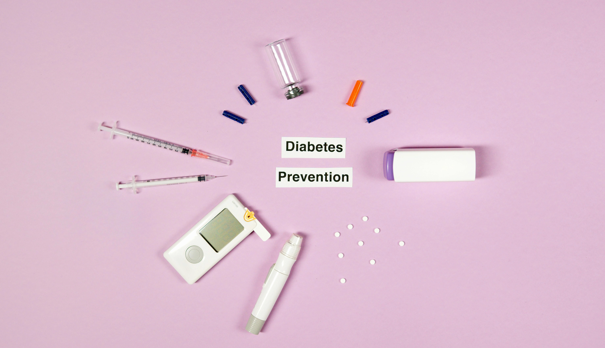

Managing Diabetes: How Ramanathapuram Residents Can Lead a Healthy Life
Diabetes treatment Ramanathapuram is becoming increasingly important as blood sugar cases rise. At Gani Hospitals personal care, every patient receives focused support to manage diabetes and live a healthier life. Whether newly diagnosed or already managing the condition, consulting a trusted sugar doctor near me is the first step toward better health.

The best diabetes treatment Ramanathapuram includes a combination of personalised medication, insulin therapy (if required), structured diet planning, regular physical activity, and consistent follow-up with an experienced Diabetologist in Ramnad. At Gani Hospitals, patients receive comprehensive chronic disease management tailored to their individual health needs — helping them live a healthy, complication-free life.
Understanding Diabetes – What Every Resident Should Know
Diabetes mellitus is a long-term metabolic condition where the body either fails to produce enough insulin or cannot use insulin effectively, resulting in high blood glucose levels. Left unmanaged, it causes severe damage to the heart, kidneys, nerves, and eyes. Diabetes treatment Ramanathapuram at Gani Hospitals begins with a thorough diagnosis so that each patient receives a treatment plan tailored to their specific type and stage of diabetes.
The three main types of diabetes are:
- Type 1 Diabetes – The immune system attacks insulin-producing cells; lifelong insulin therapy is required.
- Type 2 Diabetes – The most common form; strongly linked to lifestyle, diet, and genetics.
- Gestational Diabetes – Develops during pregnancy and requires immediate medical attention.
No matter the type, a skilled Diabetologist in Ramnad can guide patients through the right combination of medication, diet, and lifestyle adjustments to achieve stable blood sugar levels.
Why Diabetes Rates Are Rising in Ramanathapuram
The demand for diabetes treatment Ramanathapuram has increased significantly over the past decade. Several local factors contribute to this rise:
- High consumption of refined carbohydrates, white rice, and sugary beverages
- Sedentary occupations with minimal physical activity
- Chronic stress from economic and family pressures
- Strong hereditary susceptibility in many South Indian families
- Irregular sleep patterns and poor stress management
- Limited access to timely medical screenings in certain areas
Awareness is the first line of defence. Knowing the warning signs and promptly visiting a sugar doctor near me can prevent simple high blood sugar from turning into a lifelong complication. Gani Hospitals personal care team actively conducts community awareness programs across Ramanathapuram to encourage early screening.
Early Warning Signs You Should Never Ignore
Recognising symptoms early is key to successful chronic disease management. If you notice any of the following signs, consult a Diabetologist in Ramnad without delay:
- Unusually frequent urination, especially at night
- Persistent thirst that is never fully quenched
- Unexplained weight loss despite eating normally
- Constant fatigue and low energy levels
- Blurred or changing vision
- Slow healing of cuts, bruises, or wounds
- Tingling, numbness, or burning sensation in the feet or hands
- Recurrent skin, gum, or bladder infections
At Gani Hospitals, walk-in consultations are available so that residents can meet a sugar doctor near me quickly without lengthy waiting times. Early diagnosis dramatically improves the chance of keeping diabetes well controlled.
Complications of Uncontrolled Diabetes
Poorly managed diabetes silently damages major organs over time. This is why structured chronic disease management is non-negotiable. The complications include:
- Cardiovascular disease: Increased risk of heart attack and stroke
- Diabetic nephropathy: Progressive kidney damage that may lead to dialysis
- Diabetic neuropathy: Nerve damage causing pain, numbness, and digestive problems
- Diabetic retinopathy: Damage to blood vessels in the eye leading to vision loss
- Diabetic foot: Ulcers and infections that can require amputation if neglected
Expert diabetes treatment Ramanathapuram at Gani Hospitals personal care focuses on preventing all of the above through regular monitoring, medication optimisation, and patient education. Our Diabetologist in Ramnad works alongside cardiologists, nephrologists, and ophthalmologists to provide truly holistic care.
Comprehensive Diabetes Treatment at Gani Hospitals
Gani Hospitals personal care approach to diabetes treatment Ramanathapuram is built around four pillars: accurate diagnosis, personalised medication, nutrition guidance, and lifestyle coaching. Our Diabetologist in Ramnad creates a step-by-step management plan for every patient.
1. Accurate Diagnosis & Lab Work
We conduct HbA1c tests, fasting and post-prandial blood glucose tests, kidney function panels, lipid profiles, and urine microalbumin tests. This full picture allows your sugar doctor near me at Gani Hospitals to understand the exact stage of diabetes and any early organ involvement.
2. Medication & Insulin Therapy
Depending on the type and severity, treatment may include oral hypoglycaemic agents, GLP-1 receptor agonists, or advanced insulin regimens. The Diabetologist in Ramnad reviews and adjusts medications at every follow-up visit to maintain optimal glucose control.
3. Personalised Diet Planning
Nutrition plays a huge role in chronic disease management. Our dietitian, working closely with the medical team, builds meal plans suited to South Indian food preferences — incorporating millets, pulses, and seasonal vegetables while minimising refined sugars and processed foods.
4. Lifestyle Counselling & Follow-Up
Regular follow-ups are the backbone of successful diabetes treatment Ramanathapuram. Gani Hospitals personal care team schedules check-ins every 4–12 weeks depending on your condition, ensuring that no complication goes unnoticed.
The Role of a Diabetologist – Why Specialist Care Matters
Searching for a sugar doctor near me is the right instinct — but choosing a specialist makes all the difference. A Diabetologist in Ramnad has advanced training specifically in blood sugar disorders, unlike a general physician who manages many conditions simultaneously.
At Gani Hospitals, our diabetologist offers:
- Customised insulin pump and injection therapy
- Continuous glucose monitoring (CGM) guidance
- Diabetes reversal programmes for eligible Type 2 patients
- Pre-diabetes intervention to stop progression
- Management of diabetes alongside hypertension, thyroid disorders, and obesity
Effective chronic disease management through a specialist ensures you are not just treating numbers on a report — you are protecting your long-term quality of life. Gani Hospitals personal care philosophy means you are never a number; you are a person with a unique story and a treatment plan to match.
Healthy Diet Plan to Control Blood Sugar Naturally
Food choices are central to any diabetes treatment Ramanathapuram plan. The Gani Hospitals personal care nutrition team recommends the following:
Foods to Include
- Millets: Kambu, ragi, and thinai have a low glycaemic index and are staple grains in Tamil Nadu
- Green leafy vegetables: Spinach, murungai keerai, and agathi keerai support insulin sensitivity
- Bitter gourd (pavakkai): A traditional remedy known to lower blood glucose
- Fenugreek (methi/vendhayam): Soaking overnight and consuming in the morning helps regulate sugar
- Legumes and lentils: Rich in protein and fibre, they slow glucose absorption
- Cinnamon (pattai): Shown to improve insulin sensitivity when used regularly
- High-fibre fruits: Guava, papaya, and Indian gooseberry (nellikai) in moderation
Foods to Strictly Avoid
- White rice in large portions, refined maida-based foods
- Sugary sweets, mithai, and deep-fried snacks
- Carbonated beverages and packaged fruit juices
- Full-fat dairy in excess, red and processed meats
Following a well-designed diet plan — guided by a Diabetologist in Ramnad and a trained nutritionist — is one of the most powerful tools for chronic disease management without relying solely on medication.

Exercise & Physical Activity – A Natural Medicine
Physical activity is a critical component of diabetes treatment Ramanathapuram. Exercise improves insulin sensitivity, lowers blood glucose, supports weight management, and reduces cardiovascular risk. The sugar doctor near me at Gani Hospitals recommends:
- Brisk walking: 30–45 minutes, 5 days a week — simple, free, and highly effective
- Yoga: Specific asanas such as Surya Namaskar, Paschimottanasana, and Dhanurasana support pancreatic function
- Resistance training: Light weights or resistance bands 2–3 times per week
- Swimming or cycling: Excellent low-impact options for patients with joint pain
- Meditation & pranayama: Reduces cortisol, which directly impacts blood sugar levels
Always consult your Diabetologist in Ramnad before starting a new exercise routine, especially if you are on insulin, to avoid hypoglycaemia. Gani Hospitals personal care team provides exercise guides specific to your fitness level and medication schedule.
Chronic Disease Management – The Long-Term Strategy
Diabetes is not a one-time illness — it is a lifelong condition that demands sustained chronic disease management. At Gani Hospitals, our structured long-term programme for diabetes treatment Ramanathapuram includes:
- Quarterly HbA1c testing to track 3-month blood sugar averages
- Annual eye examinations to detect retinopathy early
- Regular kidney function and urine tests to monitor nephropathy
- Foot care assessments to prevent ulcers and neuropathy complications
- Cardiovascular risk evaluation including ECG, cholesterol, and blood pressure checks
- Medication reviews by the Diabetologist in Ramnad to optimise doses
- Diabetes education classes conducted by the Gani Hospitals personal care nursing team
Consistent chronic disease management prevents hospital admissions, lowers complication rates, and significantly improves quality of life for patients managing diabetes treatment Ramanathapuram over the long term. When patients engage with a trusted sugar doctor near me regularly, outcomes are dramatically better than sporadic self-treatment.
Why Choose Gani Hospitals for Diabetes Care
Residents across Ramanathapuram and the Ramnad district trust Gani Hospitals personal care for diabetes treatment because we combine clinical excellence with genuine compassion.
- ✔ Specialist Diabetologist in Ramnad with years of dedicated experience in blood sugar management
- ✔ Affordable diabetes treatment Ramanathapuram with flexible payment options
- ✔ Comprehensive chronic disease management that covers all aspects of long-term health
- ✔ On-site laboratory for fast and accurate blood sugar and HbA1c results
- ✔ Friendly nursing team that makes you feel comfortable at every visit
- ✔ Dietitian and counsellor available alongside the sugar doctor near me during consultations
- ✔ Evening and weekend appointment slots for working patients
- ✔ Multi-disciplinary team approach connecting diabetology with nephrology, ophthalmology, and cardiology
Gani Hospitals has become the preferred destination for diabetes treatment Ramanathapuram because patients see real results — better HbA1c numbers, fewer complications, and greater confidence in managing their health. Our Diabetologist in Ramnad and the wider care team guide you through every stage of chronic disease management so that you are never left navigating your condition alone. Finding a dependable sugar doctor near me in Ramanathapuram is easy — Gani Hospitals is your answer.
Trusted Medical Resources for Diabetes Information
For scientifically verified information about diabetes management, refer to these globally respected health organisations:
- World Health Organization (WHO) – Diabetes Overview
- Centers for Disease Control and Prevention (CDC) – Diabetes Guide
- National Institute of Diabetes and Digestive and Kidney Diseases (NIDDK)
- International Diabetes Federation (IDF)
These sources provide evidence-based guidelines on diabetes treatment, prevention, diet, and complications to complement the expert care you receive at Gani Hospitals.
Conclusion – Take Control of Your Health Today
Living with diabetes does not mean living a limited life. With the right support from a trusted Diabetologist in Ramnad, a structured nutrition plan, daily physical activity, and consistent chronic disease management, every person with diabetes can lead a healthy, productive, and fulfilling life.
Gani Hospitals personal care team is committed to standing beside every patient on that journey — from the first diagnosis to long-term wellness. Our sugar doctor near me service means you never have to travel far for expert blood sugar support. Whether you need guidance on medication, diet, or chronic disease management, the right help is just around the corner.
Families who make Gani Hospitals personal care their first choice for diabetes care consistently report better HbA1c control, fewer hospital admissions, and a stronger understanding of how to live well with diabetes. Every sugar doctor near me consultation at our clinic is an opportunity to fine-tune your plan and stay ahead of complications.
Do not wait for complications to appear. Visit our sugar doctor near me today and take the first step toward a healthier, well-managed life. Book your appointment at Gani Hospitals in Ramanathapuram — because your health is worth expert, compassionate care.
Call us or walk in today. Early action saves lives.
Also read: Hypertension Treatment in Ramanathapuram |
General Medicine at Gani Hospitals |
Gani Hospitals – Home
Frequently Asked Questions (FAQ)
Can diabetes be permanently cured?
Diabetes cannot be completely cured in most cases, but with dedicated chronic disease management — including medication, diet, and exercise — it can be very effectively controlled. Some Type 2 patients achieve remission through significant weight loss and lifestyle change under guidance from a Diabetologist in Ramnad.
Which doctor should I consult for diabetes in Ramanathapuram?
You should consult a Diabetologist in Ramnad or an Endocrinologist. At Gani Hospitals personal care, our experienced diabetologist provides specialised care for all types of blood sugar disorders. Walk in or call to book an appointment for diabetes treatment Ramanathapuram.
What is the best diabetes treatment in Ramanathapuram?
The best diabetes treatment Ramanathapuram combines personalised medication, insulin therapy where needed, a structured diet plan, regular exercise, and long-term chronic disease management with regular follow-ups. The Gani Hospitals personal care team works with you every step of the way.
Can diet alone control diabetes without medication?
In pre-diabetes and early Type 2 diabetes, proper diet and exercise can significantly reduce or even normalise blood sugar levels. However, most patients require medication as well. Your sugar doctor near me at Gani Hospitals will assess your individual situation, and our sugar doctor near me team will recommend the safest, most effective approach for your specific case.
What happens if diabetes is left untreated?
Untreated diabetes leads to serious complications including heart disease, kidney failure, nerve damage, vision loss, and stroke. This is why timely diabetes treatment Ramanathapuram and access to a trustworthy sugar doctor near me are so critical for long-term health.
How often should a diabetic patient visit Gani Hospitals?
As part of Gani Hospitals personal care and our structured chronic disease management programme, we recommend visits every 3–4 months for stable patients, and monthly for those whose blood sugar is still being regulated. Your Diabetologist in Ramnad will advise the exact schedule at your first consultation.